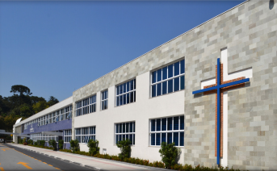
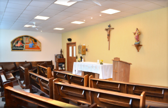
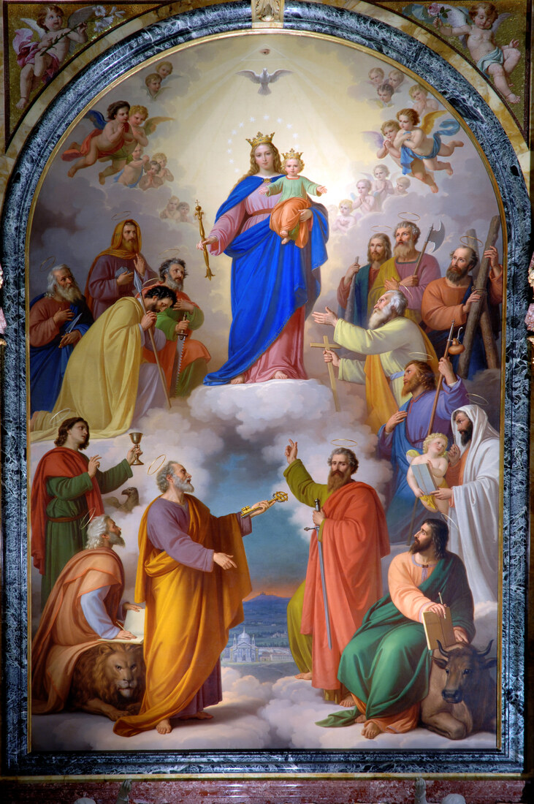

Missas
- Sábado
- 18h30
- Domingo
- 10h30
Dias úteis: sem horário divulgado. Horários do cadastro diocesano, consultado em . Confirme mudanças com a secretaria.
Venha celebrar a Missa e rezar conosco.
Rua Vigário João de Pontes, 537 · Chácara Flora

Dias úteis: sem horário divulgado. Horários do cadastro diocesano, consultado em . Confirme mudanças com a secretaria.
Antes das missas
O cadastro diocesano não informa a antecedência nem se é preciso agendar.
Fonte: Diocese de Santo Amaro, consultada em .
Não encontramos eventos especiais confirmados. Para os próximos avisos, consulte o cadastro oficial da Diocese ou ligue para a secretaria.
Na programação dos 70 anos do colégio, a escola convidou as famílias para uma missa de ação de graças com o Pe. Miguel Pipolo.
Digital Chapel, edição 48 · anúncio da escola, não aviso paroquial atual.
Pelo Batismo, nascemos para a vida em Cristo e passamos a fazer parte da Igreja (CIC 1213). Para batizar seu filho, pergunte à secretaria sobre os documentos, as datas e a preparação de pais e padrinhos.
No Matrimônio, os esposos firmam uma aliança para toda a vida. Entre batizados, Cristo elevou essa aliança à dignidade de sacramento (CIC 1601). A secretaria pode orientar sobre as datas, os documentos e a preparação.
No mesmo endereço do Colégio Maria Imaculada, a comunidade se reúne para celebrar a Missa. A Diocese registra a ligação da paróquia com os Missionários Oblatos de Maria Imaculada.
A atual Chapel School começou como escola católica para filhos de famílias americanas em São Paulo.
É a data registrada pela Diocese de Santo Amaro para a Paróquia Nossa Senhora Auxiliadora, hoje na Forania Santo Amaro.
O cadastro diocesano registra a posse do padre oblato como administrador paroquial.
A programação do aniversário incluiu uma missa de ação de graças para as famílias e a comunidade escolar.
No interior da capela, os bancos de madeira se voltam para o altar. Na parede, a imagem de Maria com o Menino está ao lado do crucifixo.

Fotografias: acervo da Diocese de Santo Amaro · uso para avaliação; autorização de publicação não verificada.

Gabriel anuncia a Maria que ela será a mãe de Jesus. Maria pergunta como isso acontecerá e se coloca a serviço de Deus (Lumen gentium, 56).
Como imitá-la: Antes de tomar uma decisão que você vem adiando, reserve um momento de silêncio e peça a Deus a coragem de fazer o que é certo.
Quando falta vinho na festa, Maria leva a necessidade a Jesus e pede aos serventes que façam o que ele disser (Lumen gentium, 58).
Como imitá-la: Pense em alguém que passa por uma dificuldade sem pedir ajuda. Reze por essa pessoa e ofereça um auxílio concreto.
Maria permanece junto à cruz. Jesus confia sua mãe ao discípulo amado e o discípulo a ela (Lumen gentium, 58).
Como imitá-la: Faça companhia a alguém que sofre. Não é preciso ter uma resposta; escutar já é um modo de permanecer ao lado.
Maria reza com os discípulos enquanto a Igreja aguarda o Espírito Santo (Lumen gentium, 59).
Como imitá-la: Combine com alguém da família um momento breve de oração nesta semana. Peçam juntos a luz do Espírito Santo.
O título «Auxiliadora» exprime a confiança na intercessão de Maria, que nos conduz a Cristo (Lumen gentium, 62). A história da festa de 24 de maio recorda a volta do papa Pio VII a Roma em 1814, após o cativeiro, e a devoção de São João Bosco em Turim.
Nossa Senhora Auxiliadora, rogai por nós.
Rua Vigário João de Pontes, 537 · Chácara Flora, São Paulo
De segunda a sexta, das 8h às 16h
nsauxiliadora@santoamaro.org.br
Cadastro da Diocese, consultado em . Confirme o atendimento antes de ir.
Rua Vigário João de Pontes, 537 · Chácara Flora, São Paulo · CEP 04748-000